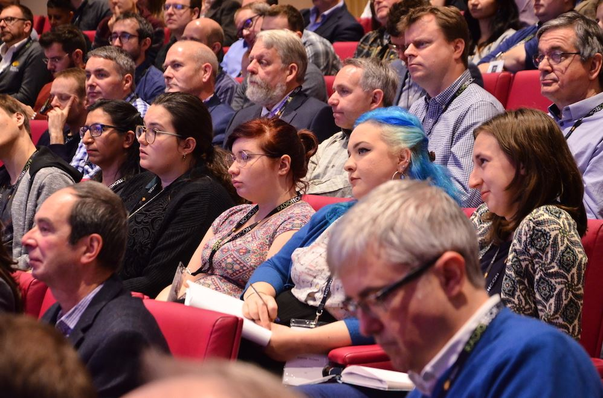
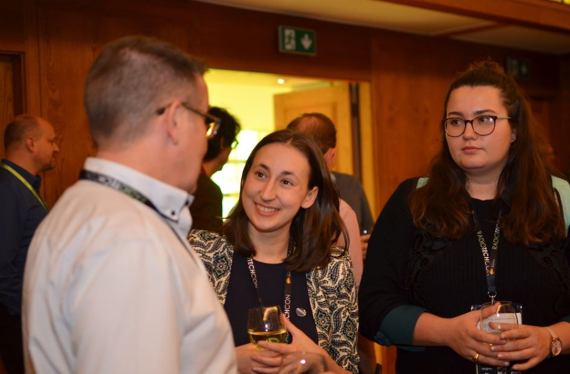
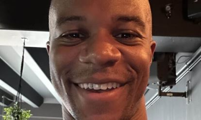
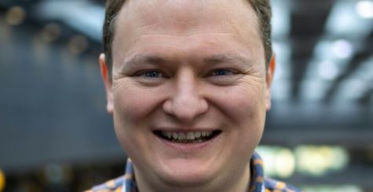
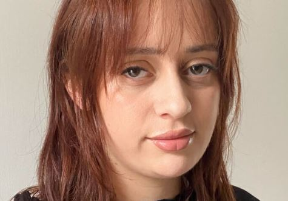

History of TechCon

The TechCon conference has been run by different groups during its history. Previously it was organised as part of the UK Radio Festival, under The Radio Academy. Since 2016 it has been run independently by TBC Media Ltd. due to limited resources at The Radio Academy.TBC Media Ltd. is run by Ann Charles and Aradhna Tayal, who are former committee members of TechCon from its Radio Festival days. TBC Media Ltd. exists to support the UK radio and audio industry by running events to support the technical community, most notably Radio TechCon.

Mission
TechCon's mission is to accelerate Africa's digital transformation by creating a platform where stakeholders from various industries can learn, collaborate, and innovate using emerging technologies.
Past Speakers

Thadeous Matthews
Multiskilled Technical Operator at BBC Media Operations by day.Technical Artist specialising in Blender, Unreal Engine & Virtual Production by night

Jamie Laundon
Jamie has worked at Chrysalis Radio, Global Radio, RCS, and since 2014, has been based at BBC Technology in London.His role as Solution Lead for Audio Production at the BBC involves leading all of the BBC's audio technology projects to follow a common set of tools and standards, and pushing for templated media networks across the BBC.

Yasemin Kahveci
Yasemin Kahveci is a sound engineer and music producer with a passion for experimental audio that redefines the possibilities of technology.Over the past year, they have expanded their knowledge in media operations and technical production as an Open Music trainee at the BBC.Yasemin's project, Digital Sound Bath, commissioned for the 2024 BBC Proms, is an immersive surround sound experience. This innovative project blends elements of nature and technology, utilising experimental and unconventional production techniques to create a meditative and mindful audio environment.